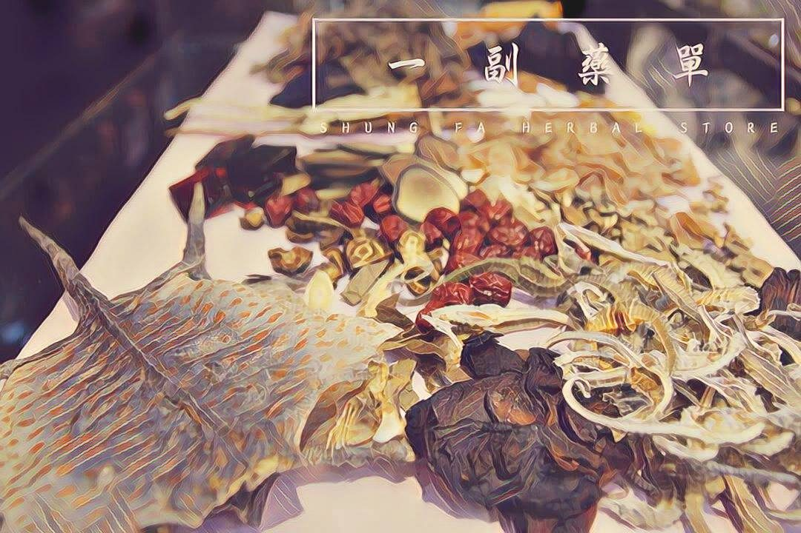

藥方
2017-10-04

覺得苦的時候，就來顆仙楂吧。
〈藥方〉
那個女人又來了。方大夫忙往抽屜深處一探，撈起書本正好趕上，女子前腳踮了進來。「感覺好些沒？昨日那帖還吃得慣？」醫生娘和善地迎上寒暄，主事的倒把眉毛都埋進破爛的古冊。
女子搖頭，有氣無力的，醫生娘暗暗扭了先生一把，方大夫百般無耐露出半張臉：「沈小姐，還換別的方子嗎？」女子微微頷首，大夫只得鋪上診巾搭一搭脈。
算算已是第四十九天。那日暑濕如蒸， 小小鋪裡擠滿患上暑疾的人，古書有云：「夏主火，內應於心」，怎可不費神醫治。忙活到日落，總算能歇歇腿，褲角才沾上凳子，沈小姐卻闖將進來，外頭的黃昏也抖落最後一抹色彩。
自那回始，沈小姐日日都來，盡揀藥房休診前一刻，每每她踩進後腳，外頭便同時沉入寂靜的黑。
說也奇怪，沈小姐心脈紊亂，雙瞳無神，卻全無暑病徵候，脈象把過一輪，也無相應的疾患。方大夫將祖傳醫書都翻了遍，藥方開過一帖又一帖，都說養心宜苦，再苦的湯藥沈小姐都給熬了，隔日卻仍按著心口，無神地求索藥單。
實在無方可治，方大夫嘆了口氣，正想怎生開口，三歲的兒子卻蹬著竹馬躍了進來。後頭醫生娘正要喊，只見兒子伸出小手，向沈小姐遞了塊仙楂糖。
女子兩行清淚，遂沒入了夜。
古早的智慧，待老藥房細細說來。
故事柑仔店
與你相約每個日落時分。
★ Photo credit：#順發中藥房